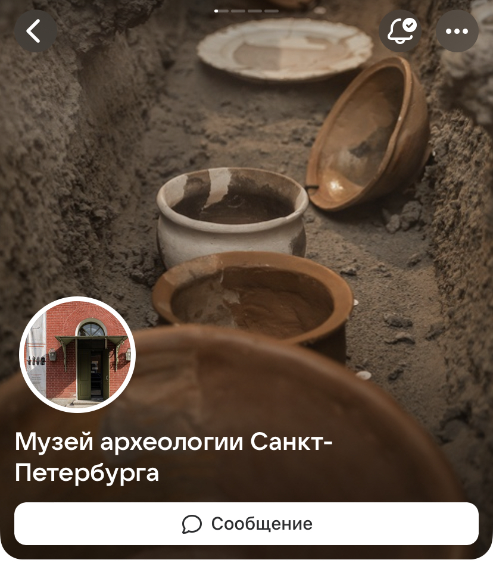
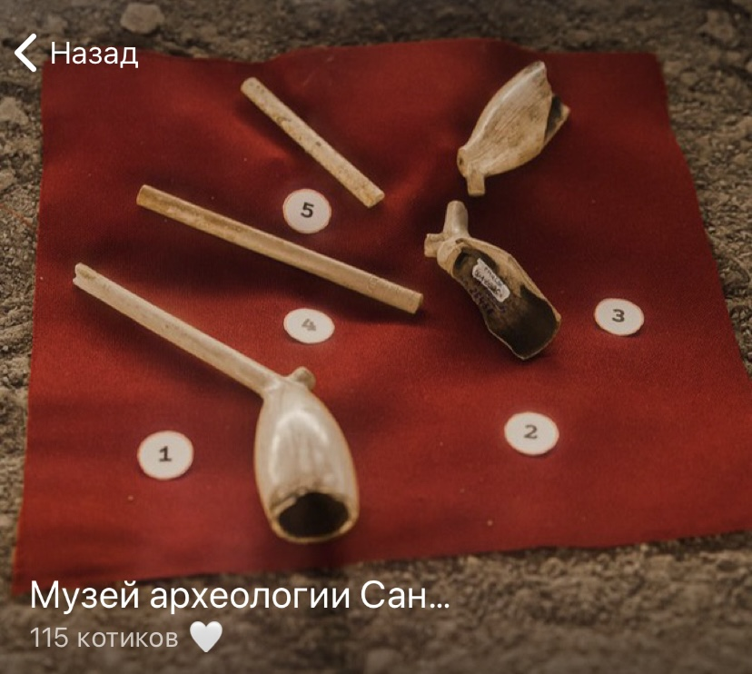

О музее
Музей археологии Санкт-Петербурга является филиалом Государственного музея истории Санкт-Петербурга и располагается самом сердце Петербурга - в Петропавловской крепости. У музея пока нет постоянной экспозиции, но вы можете посетить временную выставку "Археология Петербурга. Начало", которая находится в Невской куртине Петропавловской крепости. Также ждем вас на мероприятиях, которые проводит наш музей: лекциях и конференциях!
Узнать информацию о выставке Узнать о мероприятиях

Мы Вконтакте
Подписывайте на нашу группу Вконтакте, чтобы не пропустить новости и анонсы мероприятий: экскурсий, лекций и мастер-классов.
Подписаться

Мы в Телеграм
Подписывайте на наш Телеграм-канал, чтобы не пропустить уникальный контент: кадры с монтажа новых выставок, мемы и даже фотографии домашних животных команды Музея археологии.
Подписаться